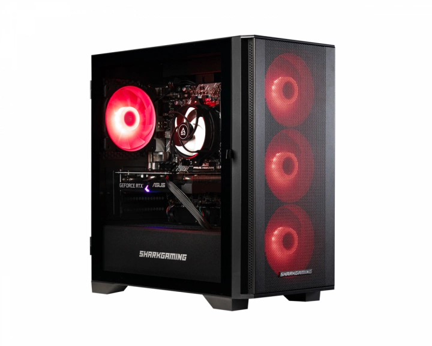

7990 kr
Duck Maelstrom R501 är en kraftfull gamingdator utrustad med senaste generationens komponenter för att leverera optimal prestanda i alla typer av spel. Perfekt för både e-sport och krävande AAA-titlar.
Stationära datorer från Duck Gaming
Denna dator är färdigbyggd och kommer med all nödvändig programvara förinstallerad. Du behöver bara ansluta
den och du är igång med spelandet! Med en gamingdator från Duck Gaming slipper du köpa delarna separat och
sedan lägga tid på att sätta ihop bygget. Datorns chassi är både snygg och hållbar tack vare sin robusta
design och eleganta RGB-belysning.
OBS! Komponenterna på bilden är illustrativa och kan variera per modell.
Med denna enastående kombination av imponerande specifikationer tar Duck Maelstrom speldator ditt spelande till en helt ny nivå. Med sin kraftfulla processor och avancerade grafikkort kan du utforska spelvärldar med enastående kvalitet och prestanda, vilket ger dig en otrolig upplevelse varje gång du spelar!
Vårt artikelnummer: 31678
Tillv. artikelnummer: DGMR501-22-3050
Duck Gaming är en ledande tillverkare av gamingdatorer i Norden och erbjuder ett omfattande urval av högpresterande datorer för både professionella spelare och hobbyister. Med fokus på innovation, prestanda och användarupplevelse har Duck Gaming etablerat sig som en respekterad aktör inom gamingdatorer i Skandinavien.
Duck Gaming är mer än bara en datortillverkare; de är passionerade spelentusiaster dedikerade till att skapa den bästa spelupplevelsen. Denna passion avspeglas i deras noggranna urval av komponenter, deras expertis inom datorbyggande och deras engagemang för kundnöjdhet.
| Egenskaper | Färg: Svart |
|---|---|
| Garanti | 2 års garanti |
| Grafikkort | Nvidia RTX 3050, 6 GB |
| Hårddisk | 1 TB SSD |
| RAM | 16 GB DDR4 |
| Mått & vikt | B: 21 cm, D: 40.5 cm, H: 42.5 cm, Vikt: 12 kg |
| Processor | AMD Ryzen 5 5500, 3.6 GHz (4.2 GHz Turbo), 6 kärnor |
| Operativsystem | Windows 11 Home |